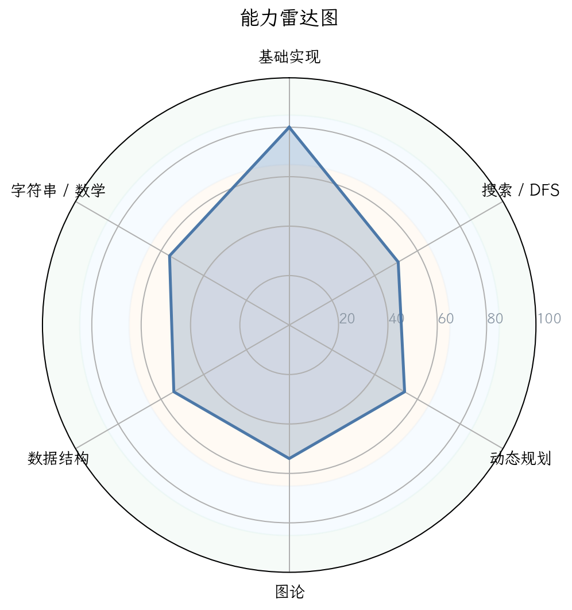
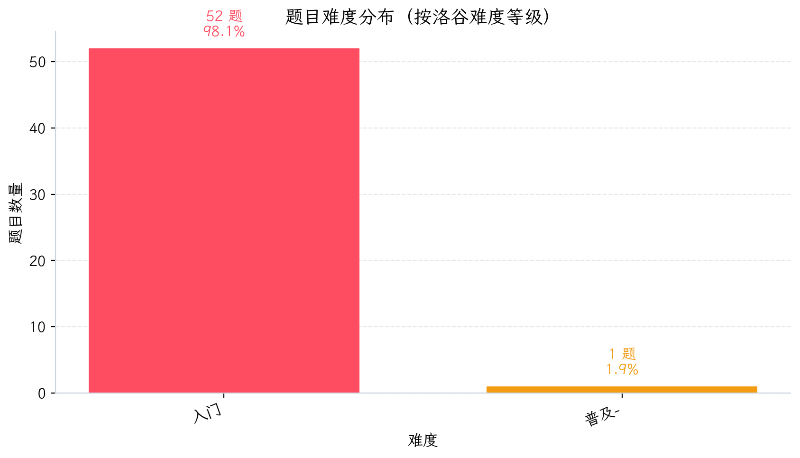
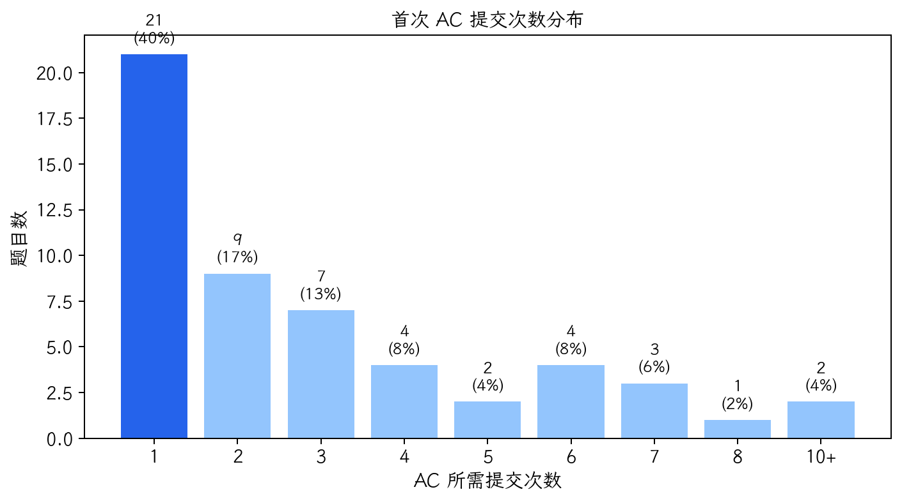
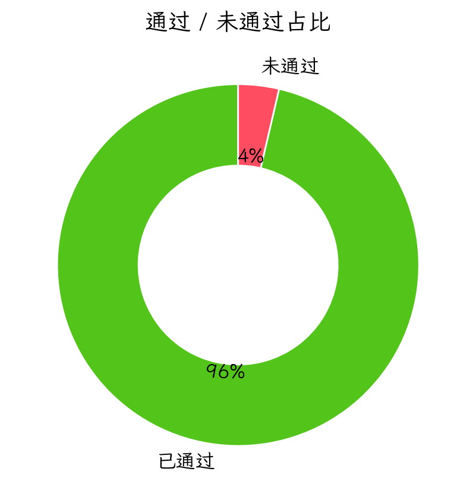
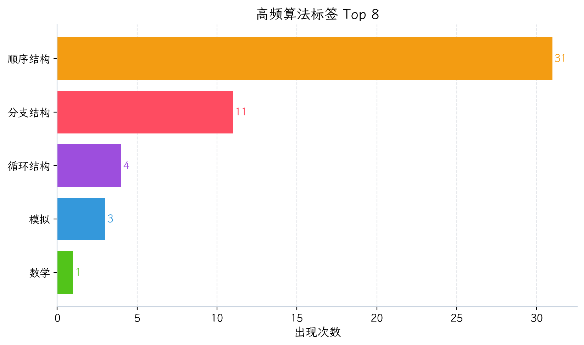

1. 核心数据概览与图表化分析

图 1：能力雷达图

图 2：性格画像雷达图

图 3：题目难度分布

图 4：首次 AC 提交次数分布

图 5：通过/未通过占比

图 6：高频算法标签 Top 8

图 1：能力雷达图
图 2：性格画像雷达图

图 3：题目难度分布

图 4：首次 AC 提交次数分布

图 5：通过/未通过占比

图 6：高频算法标签 Top 8
| 洛谷难度 | 题数 | 占比 | 分布图 |
|---|---|---|---|
| 入门 | 52 | 98.1% | 98.1% |
| 普及- | 1 | 1.9% | 1.9% |
| 普及/提高- | 0 | 0.0% | 0.0% |
| 普及+/提高 | 0 | 0.0% | 0.0% |
| 提高+/省选- | 0 | 0.0% | 0.0% |
| 省选/NOI- | 0 | 0.0% | 0.0% |
| NOI/NOI+/CTSC | 0 | 0.0% | 0.0% |
| 级别 | 已覆盖/总数 | 覆盖率 | 详细情况 |
|---|---|---|---|
| 入门 | 1/28 | 3.6% | 🟢0项 🟡0项 🟠1项 🔵0项 🔴27项 |
| 提高 | 0/50 | 0.0% | 🟢0项 🟡0项 🟠0项 🔵0项 🔴50项 |
| 省选 | 0/10 | 0.0% | 🟢0项 🟡0项 🟠0项 🔵0项 🔴10项 |
| NOI | 0/43 | 0.0% | 🟢0项 🟡0项 🟠0项 🔵0项 🔴43项 |
好的，收到。作为你的顶级算法竞赛教练，我已经仔细研读了该选手的近期刷题记录和能力评估报告。这名选手目前处于一个非常经典的“入门瓶颈期”，下面我将为你出具一份精准、犀利且极具实操性的诊断报告。
选手编号：Anonymous
P26-06-05 12:38
分析教练：AI金牌教练团队
风格诊断：该选手是一位典型的 “周末战士” 和 “冲动型学习者” 。刷题热情仅限于周末高强度爆发，但日常训练几乎停滞，导致知识体系碎片化严重。其性格画像在挑战困难时展现出不屈的韧性，但也暴露了在基础语法和调试策略上的严重短板。
| 维度 | 评分 | 数据支撑 | 拟人化评价 |
|---|---|---|---|
| 坚韧度 | ★★★★★5/5 | 卡题数1题，死磕B2026达4次，且为唯一卡题。 | “不撞南墙不回头”的倔强性格，是好苗子，但容易陷入死胡同。 |
| 完美主义 | ★★★★★3/5 | 一次AC率38.2%，偏低。表明写完代码后不检查，急于验证。 | “差不多先生”，能跑就行，缺乏对代码确定性的追求。 |
| 冒险精神 | ★★★★★2/5 | 未做过任何Lv.4+的题目，技术舒适区极浅。 | “安全感缺失”，害怕失败，只做自己会的简单题，进步缓慢。 |
| 自律性 | ★★★★★1/5 | 活跃率仅10.6%，集中在周末，周一至周五几乎不训练。 | “周末狂战士”，训练缺乏持续性，知识难以沉淀。 |
| 调试耐心 | ★★★★★1/5 | WA后1分钟内重交占比43.5%。 | “神枪手式调试”，打一枪换一个地方，从不分析原因，纯靠运气。 |
| 作息规律 | ★★★★★2/5 | 下午14:00提交爆发。 | “下午型选手”，注意力相对集中，但无晨间/晚间训练习惯。 |
| 题目 | 提交次数 | 最终状态 | 卡题原因分析 |
|---|---|---|---|
| B2026 计算浮点数相除的余 | 4次 | 未AC | 语法不通：%是取余运算符，仅支持整数。该选手试图用 % 操作 double 类型变量，这是C++基础语法的重大缺失。 |
| P5708 三角形面积 | 1次 | 未AC | 类型错误：使用 int 存储边长，导致浮点运算精度丢失和整数除法问题。 |
| 指标 | 数据 | 解读 |
|---|---|---|
| 一次AC率 | 38.2% | 约六成题目需要多次提交。反映出代码思虑不周，缺乏全面测试，容易在边界条件、数据类型上翻车。 |
| 多次提交后AC占比 | 61.8% | 是一个积极的信号，说明选手具备 “试错后发现问题并修正” 的能力，但这是低效的。 |
特征：该选手处于“低水平勤奋”状态。提交次数多，但有效思考少。其行为模式是：遇到问题 -> 随机修改 -> 继续提交 -> 靠运气通过。这在入门阶段非常危险，会形成坏习惯。
当前阶段：基础入门期
结论：该选手目前的能力已被完全锁定在Lv.1（入门）难度，尚未跨入普及组的大门。其数据结构、算法、图论、DP等核心竞赛能力几乎为零。他连“普及-”难度的题目都无法稳定AC，距离CSP-J的入门级目标尚有明显差距。这是一个危险的信号，说明其知识体系存在结构性缺失，基础不牢。
| 能力块 | 评分 | 当前等级 | 数据证据 | 已经具备 |
|---|---|---|---|---|
| 基础算法 | 49 | 🔴薄弱 | 仅有“模拟”标签3题，无递归、二分、贪心等核心基础算法AC记录。 | 能按题目模拟流程，完成简单的顺序、分支、循环。 |
| 数据结构 | 32 | 🔴薄弱 | 无任何数据结构（栈、队列、链表、树、图）的AC记录。 | 掌握最基本的数组。 |
| 图论 | 32 | 🔴薄弱 | 无任何图论算法（DFS、BFS、最短路）的AC记录。 | 零基础。 |
| 动态规划 | 38 | 🔴薄弱 | 无任何动态规划（背包、区间、状态压缩）的AC记录。 | 零基础。 |
| 字符串 | 26 | 🔴薄弱 | 无任何字符串算法（KMP、哈希）的AC记录。 | 仅能用 cin / cout 或 scanf / printf 处理字符串。 |
| 数学 | 24 | 🔴薄弱 | 仅有1个“数学”标签题，且是基础运算。 | 掌握基础算术运算。 |
3.6%。| 方向 | 掌握最好的3个考点 | 最薄弱的3个考点 |
|---|---|---|
| 强项 | 🟠 模拟法 (3题) | 🔴 枚举法、贪心法、递推法 |
| 弱项 | 🟠 循环结构 (4题) | 🔴 除模拟法外的一切 |
该选手在当前应掌握的知识点中，完全缺失以下CSP-J核心必考模块： 1. 基础算法：枚举法、贪心法、递推法、递归法、二分法、倍增法、前缀和与差分、排序算法。 2. 数据结构：栈、队列、链表。 3. 图论：图的遍历（DFS/BFS）、Flood Fill。 4. 动态规划：简单一维DP、背包问题、区间DP。 5. 搜索：深度优先搜索(DFS)、广度优先搜索(BFS)。 6. 数学：质数筛法、最大公约数（GCD）、排列组合、进制转换。
| 考纲级别 | 知识点总数 | 接触数 | 覆盖率 | 掌握评级 |
|---|---|---|---|---|
| CSP-J (入门) | 28 | 1 | 3.6% | 🔴 可怜的 |
| CSP-S (提高) | 50 | 0 | 0.0% | 🔴 空白 |
| 省选级 | 10 | 0 | 0.0% | 🔴 空白 |
| NOI级 | 43 | 0 | 0.0% | 🔴 空白 |
| 题目级别 (按标签/来源) | 通过数量 | 备注 |
|---|---|---|
| CSP-J | 0 | 例如P1909 [NOIP2016 普及组] 买铅笔未被做过。 |
| CSP-S / NOIP | 0 | 难度Lv.4+的题目未做过任何一道。 |
| 省选 / NOI | 0 | 完全未涉及。 |
| 优先级 | 风险项 | 触发场景 | 比赛症状 | 根因判断 | 训练专题 | 验收标准 |
|---|---|---|---|---|---|---|
| S（高/立即处理） | 语法不通 | 做任何数学计算题、浮点数操作题。 | 编译错误、运行结果错误。 | 对C++基本数据类型（int/double）、运算符（%、/）的理解只停留在表面。 |
C++基础数据类型与运算符 | 能准确区分 int 和 double 的使用场景，并能写出正确的求余、除法运算。 |
| S（高/立即处理） | 缺乏算法思维 | 遇到有简单规律的题目（如找最大值/最小值、简单贪心）。 | 写不出代码，或代码逻辑复杂、低效。 | 只会用“模拟”法，不会抽象问题、寻找规律、设计递推或贪心策略。 | 基础算法入门：枚举、模拟、贪心 | 能独立完成“普及-”难度的贪心/枚举题。 |
| A（中/近期处理） | 无效调试 | 提交WA后。 | 重复提交完全相同或随意修改的代码，AC率低。 | 缺乏问题定位能力，不懂得“打表”或“单步调试”，且心态急躁。 | 调试技巧与思维 | 能在本地IDE中正确使用断点和变量监视，定位错误代码行。 |
| A（中/近期处理） | 知识体系空白 | 涉及任何稍有深度的算法（如DFS、BFS、DP、栈）。 | 读题后完全无思路，直接放弃。 | 从未系统学习过核心算法，只是凭感觉写题。 | 算法基础专题：DFS/BFS/贪心/DP入门 | 能清晰画出DFS/BFS的搜索树，并能写出背包DP的朴素模型。 |
| B（低/可后置） | 训练缺乏持续性 | 周一到周五。 | 刷题量少，知识遗忘快，水平停滞不前。 | 没有养成日常训练习惯，学习全凭一时兴起。 | 日常训练打卡机制 | 每周至少完成5天，每天1-2道新题，并坚持复盘。 |
优先级说明：S（高/立即处理） · A（中/近期处理） · B（低/可后置）。
从该选手的代码样本来看，其工程习惯尚处于“野蛮生长”的混沌期。
<bits/stdc++.h> 万能头，并编写 main 函数的基本框架，说明他有一定的基础自学能力。n、mi、ma 虽然简单，但语义基本清晰，没有出现 a1, a2, a3... 等无意义命名。int 存浮点数；在浮点数取余（B2026）中，用 % 对 double 运算。这是C++41条基本规则（如“不要用int存浮点数”“不要对float/double取模”）的严重违反。 说明他对语言机制的理解停留在“能用就行”的阶段。ios::sync_with_stdio(false); cin.tie(0); cout.tie(0); 使用率为0%。在普及组比赛中，只要数据量稍大（如几千级别），他的代码就会在IO环节TLE，丢掉大量不该丢的分。for 循环完成最小值的查找和累加，但他将其分成了两个独立的循环。这反映出他缺乏“一石多鸟”的编码思维，代码效率低下且不美观。int, long long, float, double 的精度与范围；/ 和 % 的正确用法。%、/）、强制类型转换。printf / cout 输出中间变量（“打表”），或在IDE中设置断点单步跟踪。ios::sync_with_stdio(false) 等IO优化。 这是必须养成的肌肉记忆，从现在开始，所有程序都加上这行代码（或使用 scanf / printf）。(a) AI 题解摘要
核心坑点：隐藏的数据类型陷阱和浮点运算规则。海伦公式本身不难，但用整数存储浮点数会导致精度丢失。
(b) 暴力思路怎么想？
1. 输入：三个 double 类型的变量 a, b, c。
2. 计算半周长：p = (a + b + c) / 2.0。
3. 计算面积：根据海伦公式 s = sqrt(p * (p-a) * (p-b) * (p-c))。
4. 输出：printf 或 cout 控制精度输出。
* 复杂度：O(1)，非常简单。
(c) 瓶颈在哪里？
没有算法瓶颈，瓶颈在 编程语言本身。
* 数据类型：选手使用 int 存储变量 a, b, c。如果输入是浮点数（例如 3.0 4.0 5.0），int 会直接丢弃小数部分（如果是整数则无损失，但 p 的计算会有问题）。
* 整数除法：p = a / 2 是整数除法，结果会被截断。例如 (3+4+5)/2 = 12/2 = 6，看似正确，但输入 3.1 4.2 5.3 就会出错，因为 int 存储后，a=3, b=4, c=5, p=6，然后 p-a = 3... 结果完全错误。
(d) 关键性质/不变量观察 (Key Observation)
核心不变量：整个计算过程必须保证 浮点型。只要任何一个中间变量（
a,b,c,p）被错误地定义为整数，答案就会产生不可预知的偏差。
(e) 最终正解的推导与核心代码结构
#include <bits/stdc++.h>
using namespace std;
int main() {
double a, b, c, p, s; // 关键：全部使用double
cin >> a >> b >> c;
p = (a + b + c) / 2.0; // 关键：使用2.0而非2，确保浮点除法
s = sqrt(p * (p - a) * (p - b) * (p - c));
// 输出面积，控制合适的小数位数
printf("%.1f\n", s); // 假设题目要求保留1位小数，具体看题
return 0;
}
(f) 推荐同类题 * P5724 【深基4.习5】求极差：强化对数据类型（int/float）和数组遍历的理解。 * P5715 【深基3.例8】三位数排序：强化分支结构和对数值比较的逻辑。
(a) AI 题解摘要
核心坑点：
%运算符只适用于整数类型的变量。你需要知道如何进行浮点数除法求余的数学原理并用C++实现，而非直接用运算符魔法般地得到一个结果。同时要注意double类型误差的处理技巧（如fmod()）。另一个关键点是题目中对计算结果的定义：r = a - k * b, k = floor(a / b) — 这就是所谓的浮点数向下取整除法之后的余数定义。我们必须严格遵循这个定义来计算r（不能直接用%, 也需要特别注意整除情况下的正确性: 比如a = b = 5 / 2 = 1.0 的情形, k = floor(a/b) = floor(2.5) = 2, r = 2.5 - 21 = 0.5？不对, a/b 是3.0/1.0 = 3.0, 等等, 我混淆了, 应该按 a=3,b=1, 如果是 a=1,b=2, a/b=0.5, floor=0, r=1 - 02 =1。所以难度主要是理解题意和浮点运算)。
(b) 暴力思路怎么想？ 这道题没有暴力优化空间，只有正确理解和实现规则的问题。你的失败完全源于对c++运算符的误解。
/ 运算符计算 a / b。floor() 函数得到 k。r = a - k * b。(c) 瓶颈在哪里？
完全不是算法瓶颈，而是对语言和题意的双重误解。
* 语言理解：认为 % 是万能的取余符，不知道它只能用于整数。
* 题意理解：没有按照题目公式 k = floor(a / b) 和 r = a - k * b 一步步实现，而是幻想有一个函数能直接输出结果。解题步骤机械化实现能力极度缺乏。
(d) 关键性质/不变量观察 (Key Observation)
明确“无语言魔法”：竞赛的目标是用基础运算搭建逻辑，而非寻找特定API。本题的核心不变量就是
r = a - k * b这个公式，只要严格按这个写，就不会错。
(e) 最终正解的推导与核心代码结构
#include <bits/stdc++.h>
using namespace std;
int main() {
double a, b, k, r;
cin >> a >> b;
// 关键步骤：根据题目公式，使用 floor() 函数
k = floor(a / b);
r = a - k * b;
// 注意：由于浮点数精度问题，建议输出时保留一定的小数位数或使用printf
// 题目如果要求保留整数，则向上取整或四舍五入到整数
// 输出，例如保留小数点后4位
printf("%.4f\n", r); // 或者 cout << fixed << setprecision(4) << r << endl;
return 0;
}
(f) 推荐同类题
* P5707 【深基2.例12】上学迟到：深入练习时间计算，包括 ceil() 和 floor() 函数的使用。
* P5717 【深基3.习8】三角形分类：强化对数值分类讨论和逻辑判断能力的训练。
这名选手是一块未经雕琢的璞玉。他有热情（周末高强度刷题），有韧性（死磕一道题），但目前正走在一条完全错误的道路上。
他的核心问题是：用“体力上的勤奋”掩盖“思维上的懒惰”。 他遇到了问题不思考，而是反复提交碰运气；他刷了大量入门题，但从不反思总结；他基础语法一塌糊涂，却妄想直接写出难题的代码。
我的建议非常明确： 立即暂停所有刷题。回归基础，用一周时间把C++的 int、double、%、/ 这些概念彻底搞明白。然后再从“模拟”和“枚举”开始，系统地、平心静气地开始真正的算法学习之路。如果他能改变这种浮躁的学习习惯，凭借其坚韧的性格，未来必有可为。反之，他将永远卡死在入门阶段的深水区里。